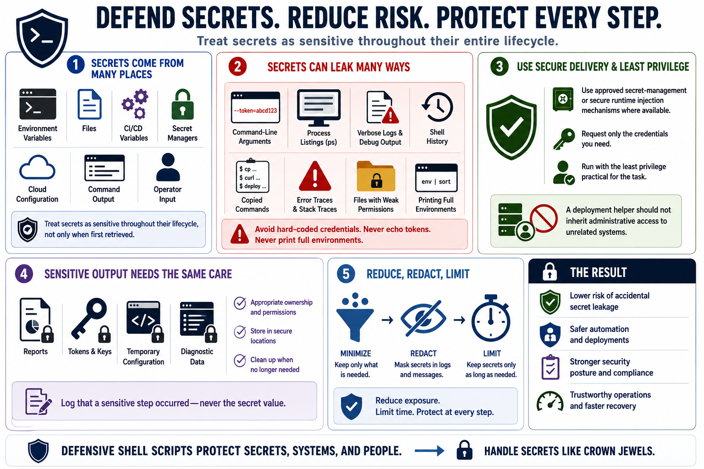

Secrets, Environment Variables, and Sensitive Output
Connecting to LMS... Progress: in progress

Narration
Scripts frequently run in environments that contain tokens, passwords, keys, service credentials, cloud configuration, and deployment secrets. Those values may arrive through environment variables, files, CI/CD variables, secret managers, command output, or operator input. Defensive scripts treat secrets as sensitive throughout their lifecycle, not only when they are first retrieved.
Secrets can leak through command-line arguments, process listings, verbose logs, debug output, shell history, copied commands, error traces, and files with weak permissions. A script should avoid hard-coded credentials, avoid echoing tokens, and avoid printing full environments. Environment variables can be useful delivery mechanisms, but they are not automatically safe if the script logs them or passes them to child processes unnecessarily.
Approved secret-management or secure runtime injection mechanisms are preferable where available. The script should request only the credentials it needs and should run with the least privilege practical for the task. A deployment helper should not inherit administrative access to unrelated systems just because it runs in a privileged environment.
Sensitive output needs the same care as sensitive input. Files containing reports, tokens, temporary configuration, or diagnostic data should have appropriate ownership and permissions. Logs should record that a sensitive step occurred without recording the secret value. Defensive shell programming reduces accidental leakage by minimizing, redacting, and limiting how long sensitive values remain available.